Ãœberblick: Interferenz verstehen
Jetzt lernst du Schritt für Schritt, wie Interferenz entsteht und wie man sie beschreibt.
Was du hier lernst
Interferenz ist ein zentrales Thema der Oberstufe. Du erkennst, wie sich Wellen überlagern, wann sie sich verstärken oder auslöschen und wie man das mathematisch beschreibt.
Zum Schluss gibt es noch einige Rechenaufgaben, die die Themen Reflexion, stehende Wellen und Interferenz verbinden.
Bearbeite die Aufgaben direkt auf der Seite. Teste nun dein Wissen Schritt für Schritt und nutze die Merksätze als Zusammenfassung. Am Ende kannst du deine Antworten absenden.
Interferenz – wenn Wellen sich treffen
Jetzt lernst du, wie sich Wellen überlagern und warum dabei Maxima und Minima entstehen.
Stell dir vor, du wirfst zwei Steine in einen ruhigen See. Von beiden Stellen laufen Wellenringe los – und irgendwann treffen sie aufeinander. Genau dort passiert etwas Spannendes: Manchmal werden die Wellen höher, manchmal scheinen sie sich gegenseitig „wegzumachen“. Dieses Zusammenspiel nennt man Interferenz.
Schau dir dazu vielleicht auch einmal das Video an: Zum Video
Was bedeutet Interferenz?
Interferenz heißt: Zwei (oder mehr) Wellen überlagern sich. An jedem Ort addieren sich ihre Auslenkungen. Das ist kein „Trick“ und keine neue Welle – es ist einfach die Summe aus beiden Bewegungen, die gleichzeitig da sind.
Du kennst das schon von der Reflexion, die zu stehenden Wellen führt.
Merksatz: Interferenz ist das Ergebnis der Ãœberlagerung von Wellen.
Die Superposition: Wellen addieren sich
Wenn zwei Wellen zur gleichen Zeit am gleichen Ort ankommen, gilt:
Gesamtauslenkung = Auslenkung 1 + Auslenkung 2
Das nennt man Superpositionsprinzip. Es ist die Grundlage für alles, was du bei Interferenz sehen wirst.
Interferenz begegnet dir in ganz unterschiedlichen Bereichen: bei Lichtwellen (Optik), bei Schallwellen (Akustik) und sogar bei Materiewellen (Quantenphysik). Obwohl diese Wellen „verschieden“ wirken, gilt immer dieselbe Grundidee: Treffen mehrere Wellen aufeinander, dann überlagern sie sich.
Aus dieser Ãœberlagerung kann ein Interferenzmuster entstehen. Ein typisches Interferenzmuster sieht aus wie eine Abfolge von hellen und dunklen Streifen (oder Bereichen). Dabei gilt:
- Helle Streifen: Stellen, an denen sich Wellen verstärken (konstruktive Interferenz).
- Dunkle Streifen: Stellen, an denen sich Wellen auslöschen (destruktive Interferenz).
Stell dir das wie Teamwork vor: Manchmal arbeiten Wellen zusammen und machen „mehr“ daraus – manchmal arbeiten sie gegeneinander und es bleibt fast nichts übrig.
Interferenzmuster
Hier siehst du zwei Beispiele für Interferenzmuster, links ist ein Interferenzmuster mit zwei Schlitzen, rechts ein Interferenzmuster mit zwei Punktschallquellen.
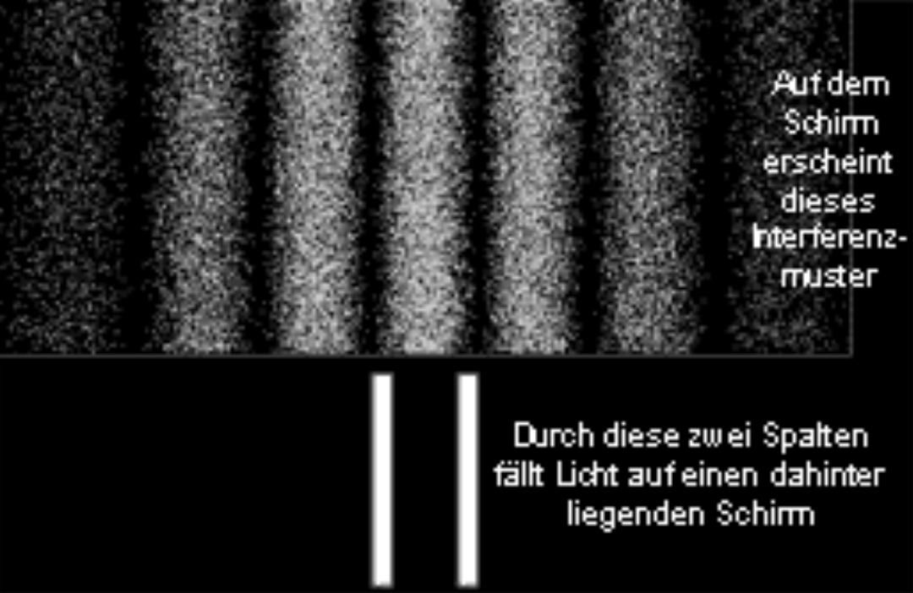
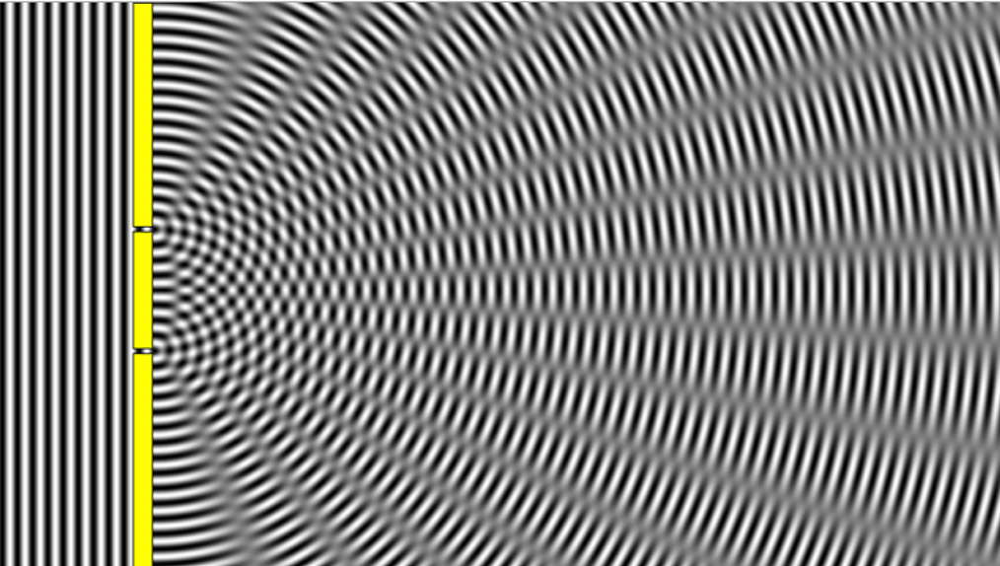
Schritt für Schritt
- Eine Welle hat eine Amplitude: Auslenkung nach oben oder unten.
- Treffen zwei oder mehr Wellen zusammen, addieren sich die Amplituden vorzeichenrichtig.
- Das Superpositionsprinzip ist die Addition der Wellenfunktionen und das nennt man Interferenz.
- Dabei kann Verstärkung, Abschwächung oder sogar Auslöschung entstehen.
- Interferenz gibt es bei Licht, Schall und Materiewellen.
- Ein Interferenzmuster entsteht durch die Ãœberlagerung mehrerer Wellen, es zeigt helle und dunkle Streifen an.
- Helle Streifen sind Stellen, wo sich Wellen verstärken, dunkle Stellen wo sie sich auslöschen.
Verstärkung nennt man konstruktive Interferenz. Abschwächung nennt man destruktive Interferenz. Du erkennst Interferenzmuster an abwechselnden Maxima und Minima.
Teste nun dein Wissen
Aufgabe:
Heftaufschrieb 1: Schreibe alles wichtige auf, was du über Interferenz bis jetzt gelernt hast.
Tipp: Benutze die Callout-Boxen und die Schritt für Schritt-Anleitung.
Konstruktive und Destruktive Interferenz
Jetzt lernst du die Bedingungen für konstruktive und destruktive Interferenzen.
Vereinfachend wollen wir annehmen, dass die betrachteten Wellen nun harmonisch sind und gleiche Amplitude, Frequenz und Schwingungsrichtung besitzen.
1. Konstruktive Interferenz (Verstärkung)
Wenn zwei Wellen „im Takt“ sind (Berg trifft Berg, Tal trifft Tal), dann addieren sie sich: Die resultierende Welle wird größer.
- Berg + Berg → höherer Berg
- Tal + Tal → tieferes Tal
Betrachten wir jetzt zwei Quellen Sâ‚ und Sâ‚‚, die gleichzeitig Wellen aussenden. Der Abstand der beiden Quellen zueinander soll d betragen.
Von beiden Quellen laufen Wellen zu einem gemeinsamen Punkt E. Die Wege, die die Wellen von S₠und S₂ bis zu diesem Punkt zurücklegen, sind unterschiedlich lang, falls E nicht genau in der Mittelsenkrechten der Quellen liegt. Dieser Unterschied heißt Gangunterschied Δs.
Ist der Gangunterschied genau eine Wellenlänge lang, also Δs = λ, bedeutet das: Die Wellen kommen am Punkt E wieder phasengleich an. Ein Wellenberg trifft auf einen Wellenberg, ein Wellental auf ein Wellental, also gilt konstruktive Interferenz.
Das gleiche gilt bei einem Gangunterschied von Δs = 2λ, Δs = 3λ, ...
Man kann den Punkt E auch mit einem Winkel α beschreiben. Der Winkel α zeigt die Richtung, unter der der Punkt E von den Quellen aus gesehen wird, dafür wird immer der Mittelpunkt der beiden Quellen als Bezugspunkt genommen. Er bestimmt zusammen mit dem Quellenabstand d, wie groß der Gangunterschied Δs ist.
Schau dir die Zeichnung ganz genau an und versuche alle Größen zu verstehen und sie mit dem Text in Zusammenhang zu bringen.

- $S_1$: Quelle $S_1$
- $S_2$: Quelle $S_2$
- $E$: Beobachtungspunkt
- $d$: Abstand der beiden Quellen
- $\alpha$: Winkel zum Beobachtungspunkt $E$. Er wird immer vom Mittelpunkt der beiden Quellen aus gemessen.
- $\Delta s$: Gangunterschied der beiden Wellen am Punkt $E$.
- $\lambda$: Wellenlänge der Wellen
Mathematisch gilt:
$\Delta s = k \cdot \lambda$ mit $k = 0, \pm 1, \pm 2, ...$
Bei $k=0$ liegt ein Maximum 0. Ordnung vor, bei $k=\pm 1$ ein Maximum 1. Ordnung usw.
Merke: Ist der Gangunterschied ein ganzzahliges Vielfaches der Wellenlänge $\Delta s = k \cdot \lambda$ mit $k = 0, \pm 1, \pm 2, ...$, entsteht konstruktive Interferenz – die Wellen verstärken sich.
Schritt für Schritt
- Ein Wellenberg trifft auf einen Wellenberg, ein Wellental auf ein Wellental.
- Bei gleicher Amplitude verdoppelt sich die Amplitude der resultierenden Welle.
- Das passiert, wenn der Gangunterschied ein ganzzahliges Vielfaches der Wellenlänge ist $\Delta s = k \cdot \lambda$ mit $k = 0, \pm 1, \pm 2, ...$.
2. Destruktive Interferenz (Auslöschung)
Wenn zwei Wellen genau gegensinnig sind (Berg trifft Tal), dann schwächen sie sich ab oder löschen sich im Idealfall aus:
- Berg + Tal → kleinere Auslenkung
- gleich groß, genau gegensinnig → Auslöschung (Ergebnis: 0)
Betrachten wir wieder zwei Quellen S₠und S₂, die gleichzeitig Wellen aussenden. Auch hier treffen die beiden Wellen in einem Punkt E aufeinander. Entscheidend ist wieder der Gangunterschied Δs.
Bei destruktiver Interferenz kommen die Wellen am Punkt E gegengleich an: Ein Wellenberg trifft auf ein Wellental. Dadurch wird die Auslenkung kleiner – im besten Fall verschwindet sie sogar ganz.
Das passiert, wenn der Gangunterschied ein ungerades halbes Vielfaches der Wellenlänge ist, also: Δs = ½λ. Dann ist die zweite Welle genau um eine halbe Periode „verschoben“.
Das gleiche gilt auch für Δs = 3/2 λ, Δs = 5/2 λ, ... - immer dann, wenn der Gangunterschied einem halben λ plus einem ganzen λ entspricht.
Schau dir die Zeichnung ganz genau an und versuche alle Größen zu verstehen und sie mit dem Text in Zusammenhang zu bringen.

- $S_1$: Quelle $S_1$
- $S_2$: Quelle $S_2$
- $E$: Beobachtungspunkt
- $d$: Abstand der beiden Quellen
- $\alpha$: Winkel zum Beobachtungspunkt $E$. Er wird immer vom Mittelpunkt der beiden Quellen aus gemessen.
- $\Delta s$: Gangunterschied der beiden Wellen am Punkt $E$.
- $\lambda$: Wellenlänge der Wellen
Mathematisch gilt:
$\Delta s = \left(k - \frac{1}{2}\right)\cdot \lambda$ mit $k = \pm 1, \pm 2, ...$
Bei $k=1$ liegt ein Minimum 1. Ordnung vor (erste Auslöschung), bei $k=\pm 2$ ein Minimum 2. Ordnung usw.
Merke: Ist der Gangunterschied ein ungerades halbes Vielfaches der Wellenlänge ($\Delta s = (k-\tfrac12)\cdot\lambda$ mit $k = \pm 1, \pm 2, ...$), entsteht destruktive Interferenz – die Wellen schwächen sich ab oder löschen sich aus.
Schritt für Schritt
- Ein Wellenberg trifft auf ein Wellental (die Wellen sind gegensinnig).
- Die resultierende Amplitude wird kleiner.
- Bei gleicher Amplitude und $\Delta s = (k-\tfrac12)\lambda$ löschen sich die Wellen aus.
Simulation: Zwei kohärente Quellen und Schirm
Verschiebe den Cursor auf dem Schirm nach oben oder unten mit dem Schieberegler rechts.
Du siehst, wie sich der Gangunterschied $\Delta s$ und der Winkel $\alpha$ ändert und wie daraus die Überlagerung rechts von E entsteht (rote Kurve).
Du kannst die Frequenz und die Animationsgeschwindigkeit verändern und den Winkel $\alpha$
und Gangunterschied $\Delta s$ ein- oder ausblenden.
Zudem siehst du rechts auf dem Schirm ein Interferenzmuster, das helle Steifen zeigt, wenn die
Amplitude der Überlagerung groß ist und dunkle Steifen, wenn die Amplitude der Überlagerung
Null ist.
Aufgaben zur Simulation
1. Stelle den Cursor so ein, dass die Amplitude der Überlagerung maximal ist, konstruktive Interferenz. Notiere den Wert von y(E) und Δs/λ.
2. Stelle den Cursor so ein, dass die Amplitude der Überlagerung null ist, destruktive Interferenz. Notiere wieder y(E) und Δs/λ.
3. Ändere die Frequenz (z. B. auf f = 2.6) und wiederhole 1 und 2.
4. Vergleiche deine Werte: Was ändert sich bei den Positionen der Maxima/Minima, wenn du die Frequenz änderst?
Lückentext: Konstruktive Interferenz
Mini-Spiel: Zuordnen
Jetzt lernst du, Bedingungen und Ergebnisse sicher zu verbinden.
Aufgabe:
Heftaufschrieb 2: Schreibe alles wichtige auf, was du über konstruktive und destruktiveInterferenz bis jetzt gelernt hast.
Tipp: Benutze die Callout-Boxen und die Schritt für Schritt-Anleitung.
Welche Eigenschaften hat Interferenz?
Jetzt lernst du Kohärenz und Polarisation als Schlüsselbegriffe.
Kohärenz
Eine stabile Interferenz entsteht nur mit kohärenten Wellen. Das bedeutet: Die Wellen besitzen eine feste Phasenbeziehung über die Zeit und – ganz entscheidend – die gleiche Frequenz.
Kohärente Wellen haben daher immer die gleiche Frequenz und damit (im gleichen Medium) auch die gleiche Wellenlänge. Nur unter dieser Bedingung bleibt das Interferenzmuster zeitlich stabil, d.h. die Maxima und Minima bleiben an festen Orten.
Gleiche Frequenz → notwendig für Kohärenz
Gleiche Amplitude → nicht notwendig
Gleiche Ausbreitungsrichtung → nicht notwendig
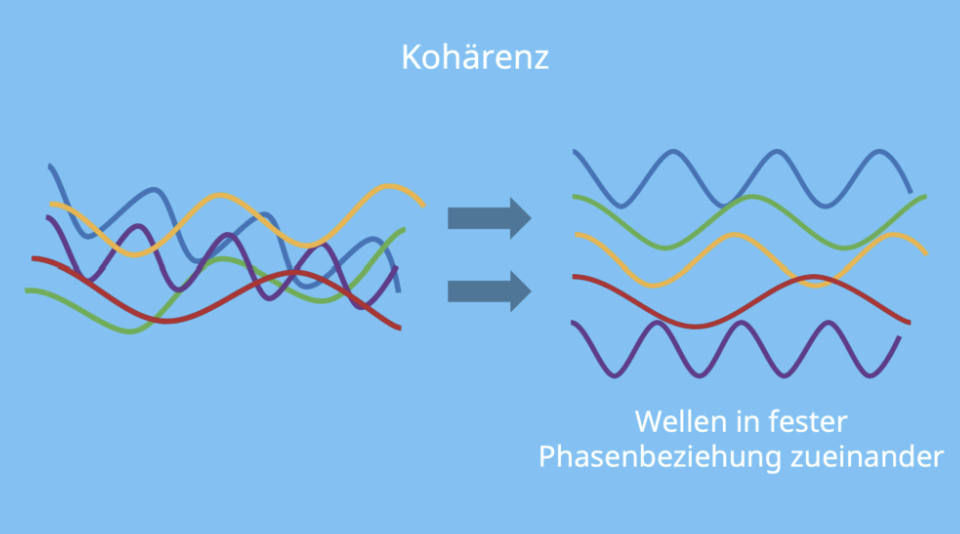
Beispiele:
Zwei Lichtstrahlen aus derselben Laserquelle sind kohärent,
weil sie die gleiche Frequenz besitzen und ihre
Phasenbeziehung zeitlich stabil ist.
Zwei unabhängige Glühlampen senden zwar Licht ähnlicher Farbe aus, sind aber nicht kohärent. Der Grund ist, dass ihre Phasen zufällig schwanken – trotz ähnlicher Frequenzen entsteht daher kein stabiles Interferenzmuster.
Kohärente Wellen haben die gleiche Frequenz und eine feste Phasenbeziehung.
Schwebung und komplizierte Interferenz
Wenn zwei Wellen mit leicht unterschiedlichen Frequenzen aufeinandertreffen und sich überlagern, entsteht eine sogenannte Schwebung. Dabei bleibt die Schwingung selbst erhalten, aber ihre Amplitude verändert sich periodisch.
Die Welle wird also abwechselnd stärker und schwächer. Diese langsame Zu- und Abnahme der Amplitude verläuft mit der Frequenzdifferenz der beiden Wellen. Das dabei entstehende, regelmäßig wiederkehrende Muster nennt man die Einhüllende der Welle – und genau dieses Phänomen bezeichnet man als Schwebung (linkes Bild).
Haben zwei Wellen jedoch komplett unterschiedliche Frequenzen, dann ändert sich ihre gegenseitige Lage ständig.
Das bedeutet:
- Manchmal schwingen beide Wellen gleichphasig → sie verstärken sich.
- Kurz darauf schwingen sie gegenphasig → sie schwächen sich ab.
Diese abwechselnde Verstärkung und Abschwächung nennt man ebenfalls Interferenz, sie ist aber nicht dauerhaft an einem festen Ort (rechtes Bild).
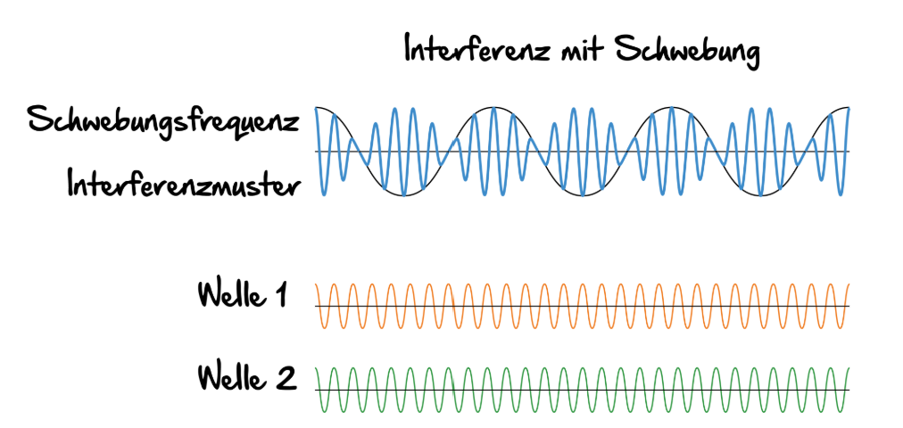
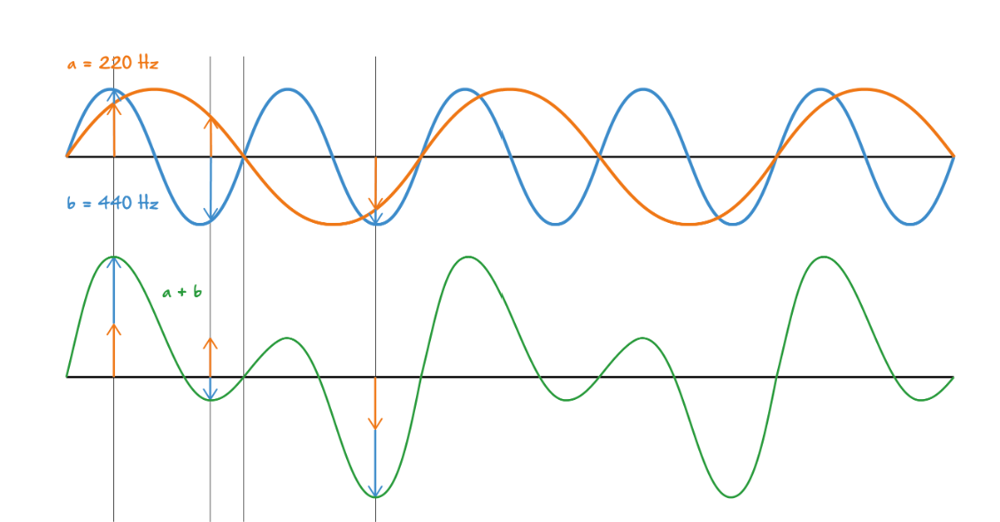
Schau dir dazu noch die Simulationen auf folgender Internetseite an: Zur Internetseite
Polarisation
Polarisation beschreibt die Richtung, in der eine Welle schwingt. Unpolarisierte Wellen schwingen sehr schnell in ständig wechselnden Richtungen und wirken dadurch ungeordnet.
Sind zwei Wellen zueinander senkrecht polarisiert, so können sie sich nicht überlagern und zeigen daher keine Interferenz. Interferenz tritt nur auf, wenn die Schwingungen in derselben oder zumindest in einer gemeinsamen Richtung erfolgen.
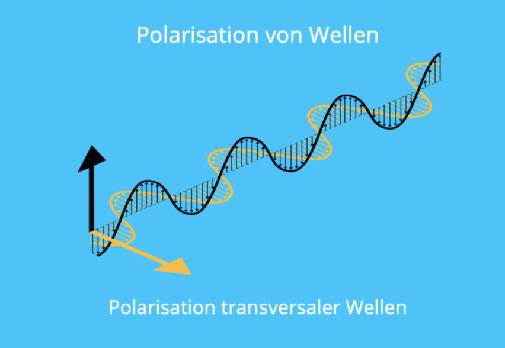
Aufgaben: Eigenschaften
Mini-Spiel: Zuordnen
So berechnest du die Interferenz
Jetzt lernst du Schritt für Schritt, wie man den Gangunterschied geometrisch berechnet und warum er entscheidet, ob sich Wellen verstärken oder auslöschen.
Wir betrachten zwei punktförmige Quellen $S_1$ und $S_2$, die gleichzeitig Wellen mit gleicher Frequenz und gleicher Amplitude aussenden. Die beiden Quellen haben einen festen Abstand $d$ zueinander.
Wir betrachten einen Punkt $E$, der sich in großer Entfernung von den beiden Quellen befindet, und untersuchen dort die Interferenz der beiden ankommenden Wellen. Aufgrund der großen Entfernung kann man annehmen, dass die Wellen in der Umgebung von $E$ nahezu parallel verlaufen.
Die Wellen von $S_1$ und $S_2$ laufen zu einem gemeinsamen Beobachtungspunkt $E$. Da die Wege unterschiedlich lang sind, treffen die Wellen dort nicht immer gleichzeitig ein.
Der Gangunterschied $\Delta s$ ist die Differenz der beiden Weglängen. Er bestimmt, ob sich die Wellen am Beobachtungspunkt verstärken (konstruktive Interferenz) oder auslöschen (destruktive Interferenz).

Schritt für Schritt
- Zwei Quellen $S_1$ und $S_2$ senden kohärente Wellen aus (gleiche Frequenz, feste Phasenbeziehung).
- Die Wellen treffen sich in einem Punkt $E$ im waagrechten Abstand $e$ von den Quellen. Der seitliche Abstand dieses Punktes von der Mitte nennen wir $a$.
-
Durch die Geometrie entsteht ein Gangunterschied $\Delta s$.
Dieser ergibt sich aus der Projektion des Quellenabstands $d$
auf die Ausbreitungsrichtung der Wellen:
\[\Delta s = d \cdot \sin(\alpha)\] -
Der Winkel $\alpha$ ist sehr klein, da der Beobachtungspunkt weit entfernt ist
($e \gg d$). Für kleine Winkel gilt die Näherung:
\[\tan(\alpha) \approx \sin(\alpha)\] -
Aus der Geometrie folgt:
\[\tan(\alpha) = \dfrac{a}{e}\] -
Setzt man dies in die Formel für den Gangunterschied ein, erhält man:
\[\Delta s = d \cdot \dfrac{a}{e}\]
Warum ist das wichtig?
Mit dieser Formel kannst du genau berechnen, an welchen Stellen auf dem Schirm helle Streifen (Maxima) und dunkle Streifen (Minima) entstehen.
Der Gangunterschied hängt direkt von der Geometrie des Aufbaus ab – vom Quellenabstand $d$, vom Abstand zum Schirm $e$ und von der Position $a$.
Teste nun dein Wissen
Bedingungen für Maxima und Minima bei zwei Quellen
Im folgenden lernst du die rechnerischen Bedingungen für Maxima und Minima, wenn zwei Wellen interferieren.
Überlagern sich zwei Wellen, die von zwei Quellen mit dem Abstand d ausgehen, dann können sich ihre Schwingungen
an manchen Orten verstärken und an anderen abschwächen.
Wenn sie sich verstärken ist das konstruktive Interferenz, und es entstehen Maxima.
Wenn sie sich auslöschen ist das destruktive Interferenz, und es entstehen Minima.
Bedingungen für Maxima
Damit wir vorhersagen können, wo Verstärkungen auftreten, betrachten wir zwei Möglichkeiten:
- die Lage der Maxima in Abhängigkeit vom Winkel α, gemessen ab dem Mittelpunkt der beiden Quellen.
- die Lage der Maxima als Ort a auf einem Schirm, der im Abstand $e$ aufgestellt ist.
In beiden Fällen spielt der Gangunterschied Δs eine zentrale Rolle.
1. Winkelabhängigkeit der Maxima
Ein Maximum entsteht genau dann, wenn sich die beiden Wellen phasengleich überlagern. Das ist der Fall, wenn der Gangunterschied ein ganzzahliges Vielfaches der Wellenlänge ist, es wird "hell".
Bringen wir nun die Formeln für kontruktive Interferenz von Seite 3 \[\Delta s = k \cdot \lambda \quad \textrm{mit}\quad k=0,\pm 1, \pm 2, ...\] und der Bedingung für den Gangunterschied bei Winkel $\alpha$ \[\Delta s = d \cdot \sin(\alpha)\] zusammen, ergibt sich: \[\sin(\alpha)=\frac{k\cdot\lambda}{d}\quad \textrm{mit}\quad k=0,\pm 1, \pm 2, ... \]
Hauptmaximum ($k=0$): $\quad \quad \sin(\alpha)=0$
1. Nebenmaximum ($k=1$): $\quad\sin(\alpha)=\frac{\lambda}{d}$
2. Nebenmaximum ($k=2$): $\quad\sin(\alpha)=\frac{2\cdot\lambda}{d}$
3. Nebenmaximum ($k=3$): $\quad\sin(\alpha)=\frac{3\cdot\lambda}{d}$
...
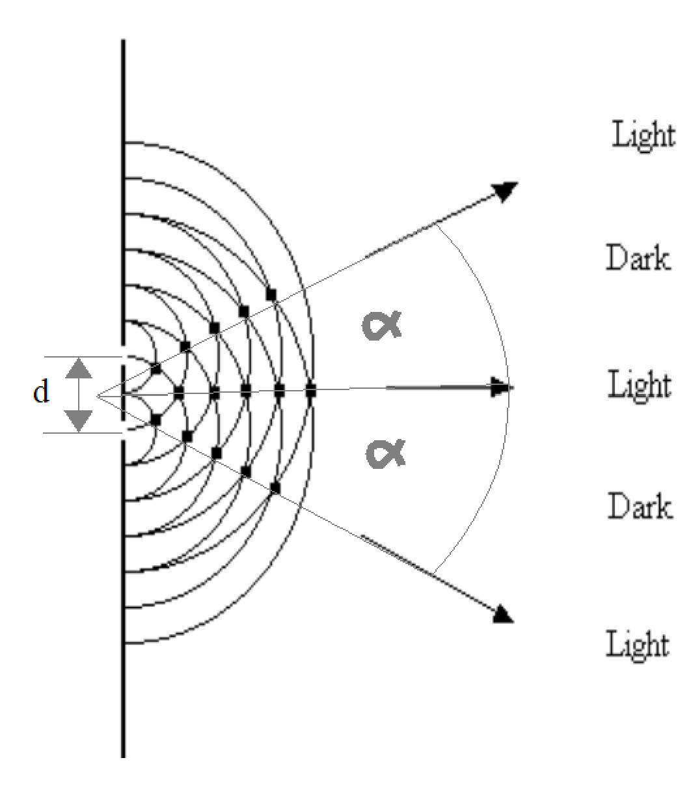
\[\sin(\alpha)=\frac{k\cdot\lambda}{d}\quad \textrm{mit}\quad k=0,\pm 1, \pm 2, ... \]
Die Abstände der Maxima sind nicht gleichmäßig.
Je größer die Wellenlänge λ, desto größer ist der Winkel zwischen Maxima.
Je größer der Abstand d der Quellen, desto kleiner ist der Winkel zwischen Maxima.
2. Lage der Maxima auf einem Schirm
In Experimenten misst man den Winkel meist nicht direkt. Stattdessen beobachtet man die hellen Streifen auf einem Schirm, der sich im Abstand e von den beiden Quellen befindet.
Bringen wir nun die Formeln für kontruktive Interferenz von Seite 3 \[\Delta s = k \cdot \lambda \quad \textrm{mit}\quad k=0,\pm 1, \pm 2, ...\] und der Bedingung für den Gangunterschied bei kleinem Winkel ($e \gg d$) \[\Delta s = d \cdot \frac{a}{e}\] zusammen, ergibt sich: \[ a=\frac{e}{d}\cdot k\cdot \lambda \quad \textrm{mit}\quad k=0,\pm 1, \pm 2, ... \]
Hauptmaximum ($k=0$): $\quad \quad a=0$
1. Nebenmaximum ($k=1$): $\quad a=\frac{e}{d}\cdot \lambda$
2. Nebenmaximum ($k=2$): $\quad a=\frac{e}{d}\cdot 2\lambda$
3. Nebenmaximum ($k=3$): $\quad a=\frac{e}{d}\cdot 3\lambda$
...
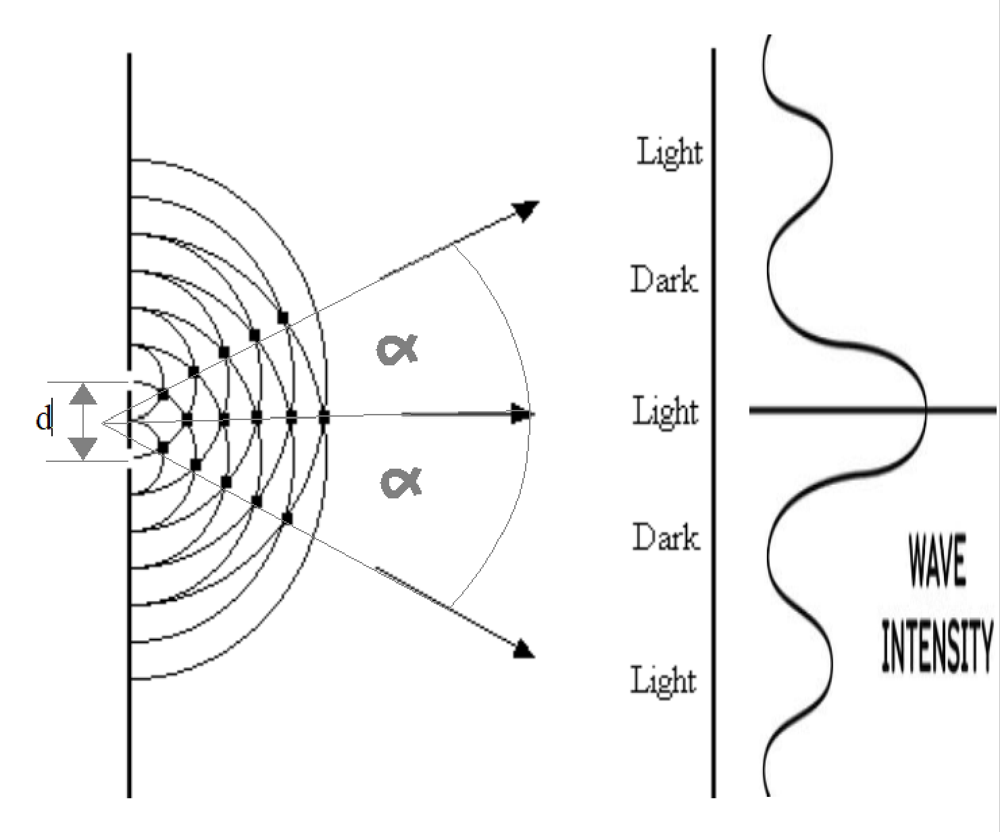
\[ a=\frac{e}{d}\cdot k\cdot \lambda \quad \textrm{mit}\quad k=0,\pm 1, \pm 2, ... \]
Die Abstände der Maxima auf dem Schirm sind also gleichmäßig.
Je größer der Schirmabstand e oder die Wellenlänge λ, desto weiter liegen die hellen Streifen auseinander.
Je größer der Abstand d der Quellen, desto näher liegen die hellen Streifen auseinander.
Bedingungen für Minima
Neben Verstärkungen (Maxima) können sich zwei Wellen auch gegenseitig auslöschen. Diese Auslöschung nennt man destruktive Interferenz.
Damit wir vorhersagen können, wo diese Minima auftreten, betrachten wir – ganz analog zu den Maxima – wieder zwei Möglichkeiten:
- die Lage der Minima in Abhängigkeit vom Winkel α, gemessen von der Mittelsenkrechten
- die Lage der Minima als Ort a auf einem Schirm im Abstand e
Auch hier spielt der Gangunterschied Δs eine zentrale Rolle.
1. Winkelabhängigkeit der Minima
Ein Minimum entsteht genau dann, wenn sich die beiden Wellen gegenphasig überlagern. Das bedeutet: Ein Wellenberg trifft auf ein Wellental – die Schwingungen löschen sich aus, es wird "dunkel".
Gegenphasigkeit liegt vor, wenn der Gangunterschied ein ungeradzahliges halbes Vielfaches der Wellenlänge ist:
\[ \Delta s = \left(k - \tfrac{1}{2}\right)\lambda \quad \text{mit} \quad k = \pm 1, \pm 2, \dots \]Der Gangunterschied ergibt sich geometrisch – wie zuvor – aus dem Winkel:
\[ \Delta s = d \cdot \sin(\alpha) \] Beide Bedingungen zusammen: \[ d \cdot \sin(\alpha) = \left(k - \tfrac{1}{2}\right)\lambda \]Daraus folgt die Winkelbedingung für Minima:
\[ \sin(\alpha) = \frac{\left(k - \tfrac{1}{2}\right)\lambda}{d} \]1. Minimum (k = 0): $\sin(\alpha) = \frac{\lambda}{2d}$
2. Minimum (k = 1): $\sin(\alpha) = \frac{3\lambda}{2d}$
3. Minimum (k = 2): $\sin(\alpha) = \frac{5\lambda}{2d}$
…

\[ \sin(\alpha) = \frac{\left(k - \tfrac{1}{2}\right)\lambda}{d} \quad \text{mit} \quad k = \pm 1,\pm 2,\dots \]
Die Minima liegen jeweils zwischen zwei Maxima.
Je größer die Wellenlänge λ, desto größer sind die Winkelabstände.
Je größer der Quellenabstand d, desto kleiner werden die Winkelabstände.
2. Lage der Minima auf einem Schirm
In der Praxis misst man meist nicht den Winkel, sondern beobachtet die dunklen Streifen auf einem Schirm im Abstand e.
Für kleine Winkel (e ≫ d) gilt näherungsweise:
\[ \sin(\alpha) \approx \frac{a}{e} \]Damit wird der Gangunterschied:
\[ \Delta s = d \cdot \frac{a}{e} \]Für Minima gilt erneut:
\[ d \cdot \frac{a}{e} = \left(k - \tfrac{1}{2}\right)\lambda \]Aufgelöst nach a:
\[ a = \frac{e}{d}\left(k - \tfrac{1}{2}\right)\lambda \]1. Minimum (k = 0): $a = \frac{e}{d}\cdot \frac{\lambda}{2}$
2. Minimum (k = 1): $a = \frac{e}{d}\cdot \frac{3\lambda}{2}$
3. Minimum (k = 2): $a = \frac{e}{d}\cdot \frac{5\lambda}{2}$
…
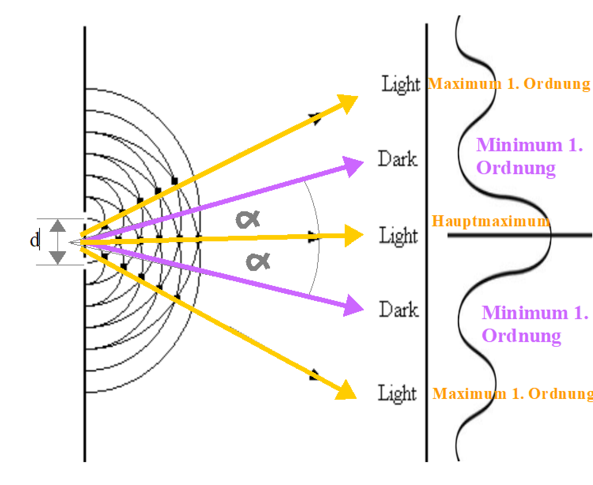
\[ a = \frac{e}{d}\left(k - \tfrac{1}{2}\right)\lambda \quad \text{mit} \quad k = \pm 1,\pm 2,\dots \]
Die Minima liegen gleichmäßig auf dem Schirm.
Sie befinden sich immer genau zwischen zwei benachbarten Maxima.
Vertiefen
Gehe jetzt ruhig nochmal zurück zu Seite 3 und schaue dir die Simulation ganz unten nochmal an und versuche, alle Zusammenhänge zu verstehen. Vielleicht verstehst du die Animation jetzt besser.
Zum Weiterdenken: Wenn man keine Kleinwinkelnäherung benutzt
Steht der Schirm nicht sehr weit entfernt im Vergleich zum Quellenabstand d, dann ist die Näherung \[ \sin(\alpha) \approx \frac{a}{e} \] nicht mehr zulässig. In diesem Fall müssen wir die Geometrie exakt betrachten.
Geometrischer Zusammenhang
Der Winkel α ergibt sich aus der rechtwinkligen Geometrie zwischen dem seitlichen Abstand a auf dem Schirm und dem Schirmabstand e:
\[ \tan(\alpha) = \frac{a}{e} \]Daraus folgt:
\[ \alpha = \arctan\!\left(\frac{a}{e}\right) \]Der Gangunterschied zwischen den beiden Wellen ist weiterhin gegeben durch:
\[ \Delta s = d \cdot \sin(\alpha) \]Setzt man den Winkel ein, erhält man:
\[ \Delta s = d \cdot \sin\!\left(\arctan\!\left(\frac{a}{e}\right)\right) \]Bedingungen für Maxima auf dem Schirm
Für konstruktive Interferenz (Maxima) gilt:
\[ \Delta s = k \cdot \lambda \quad \text{mit} \quad k = 0,\pm 1,\pm 2,\dots \]Einsetzen liefert:
\[ a = e\cdot\tan\left(\arcsin\left(\frac{k \cdot \lambda}{d}\right)\right) \]Dies ist die exakte Gleichung für die Lage der Maxima auf dem Schirm, ohne Kleinwinkelnäherung.
Bedingungen für Minima auf dem Schirm
Für destruktive Interferenz (Minima) gilt:
\[ \Delta s = \left(k - \tfrac{1}{2}\right)\lambda \quad \text{mit} \quad k = \pm 1,\pm 2,\dots \]Damit ergibt sich:
\[ a = e\cdot\tan\left(\arcsin\left(\frac{\left(k-\frac{1}{2}\right) \cdot \lambda}{d}\right)\right) \]Auch dies ist eine exakte Beziehung für die dunklen Streifen auf dem Schirm.
Ohne Kleinwinkelnäherung sind die Abstände der Maxima und Minima nicht mehr exakt gleichmäßig. Erst für große Schirmabstände e ≫ a gehen diese Formeln in die bekannten linearen Beziehungen über.
Aufgaben zu den Bedingungen
Rechenaufgabe: Wellenträger 1
Hier findest du eine Aufgabe zur Reflexion und stehenden Wellen.
Auf einem begrenzten, linearen Wellenträger breitet sich eine mechanische Welle aus. Zum Zeitpunkt 0s beginnt am linken Ende des Wellenträgers der Erreger harmonisch zu schwingen. Mit einem Messwerterfassungssystem wurde die Auslenkung des Teilchens, das vom Erreger den Abstand 9,0 cm hat, in Abhängigkeit von der Zeit gemessen. Das Ergebnis ist im nebenstehenden Diagramm dargestellt.
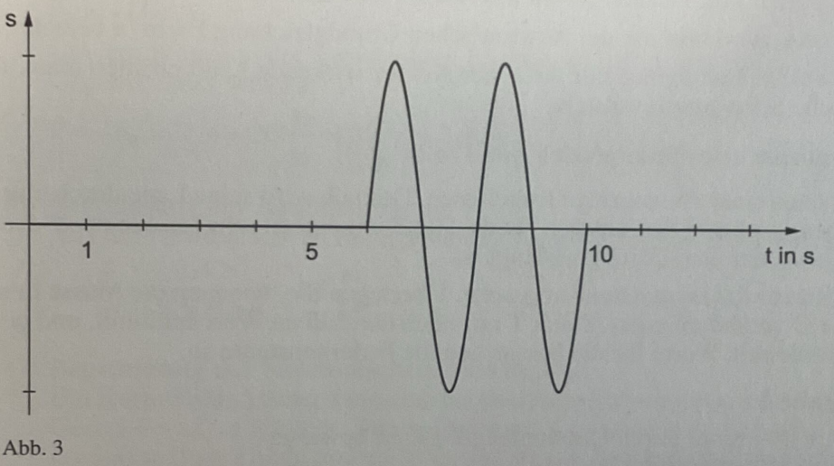
Rechenaufgabe: Eisendraht
Hier findest du eine Aufgabe zur Reflexion und stehenden Wellen.
Ein 60,0 cm langer Eisendraht wird an beiden Enden fest eingespannt und mit einem Elektromagneten zum Schwingen angeregt. Die Erregerfrequenz wird dabei von 0 Hz auf 100 Hz langsam erhöht. Bei 400Hz beobachtet man erstmals, dass die Mitte des Drahts dauerhaft in Ruhe bleibt.
a) Bestimme die Ausbreitungsgeschwindigkeit der vom Erreger erzeugten Welle.
Der Draht wird nun zunächst mit der Frequenz 500Hz, dann in einem weiteren Experiment mit der Frequenz 600Hz angeregt.
b) Überprüfe, ob es nach dem Einschwingvorgang zwischen den beiden eingespannten Enden Punkte auf dem Draht geben kann, für die die nebenstehenden Zeit-Auslenkungs-Diagramme prinipiell möglich sind. Begründe deine Antwort.
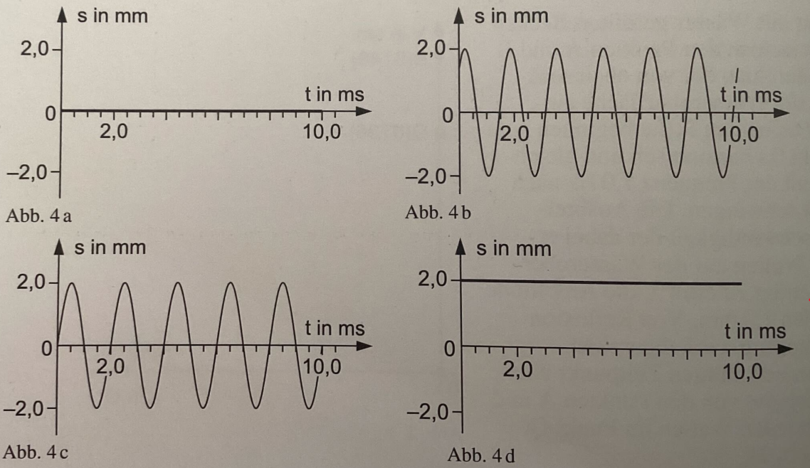
Eine Schülergruppe diskutiert, ob das Diagramm nebenstehende Diagramm ein Momentbild des Eisendrahts sein könnte.
- Axel: "Das kann nur sein, wenn der Draht ruht."
- Christoph: "Der muss nicht ruhen, an der Stelle ist ein Knoten."
- Eva: "Das ist möglich, wenn es sich um eine Eigenschwingung handelt."
- Petra: "Das kann nicht sein, das würde der Energieerhaltung widersprechen."
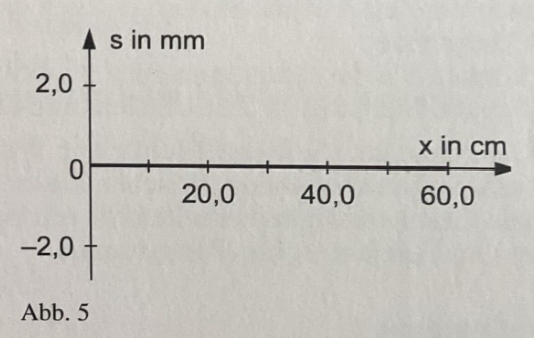
c) Beurteile jeder der vier Aussagen.
Lösung zur Aufgabe Eisendraht
Wir haben zwei feste Enden, die Grundschwingung (1.Eigenfrequenz) hat genau einen Bauch in der Mitte und Knoten an den Enden.
Die Frequenz der Grundschwingung ist
\[L=\frac{\lambda_1}{2}\] Bei den weitern Eigenfrequenzen kommt immer ein Bauch dazu, deshalb ist der erste Knoten in der Mitte bei der zweiten Eigenfrequenz.
Und genau das wird beobachtet. Jetzt ist die Länge des Seils auch genau die Wellenlänge der zweiten Eigenfrequenz: $L=\lambda_2$
Mit $f_k = k \cdot f_1$ für die k-te Oberschwingung folgt für die erste Eigenfrequenz (k=2): $f_2=400Hz$ und somit $f_1=200Hz$.
Für die Ausbreitungsgeschwindigkeit der Welle gilt:
\[c = \lambda_2 \cdot f_2 = 0.6m \cdot 400Hz = 240 m/s\]
Wird der Draht mit 500Hz angeregt, so ist das die 2,5-fache der Grundfrequenz. Es kann also keine stehende Welle entstehen, da nur ganzzahlige Vielfache der Grundfrequenz möglich sind. Somit kann auch kein Knoten entstehen, an dem die Auslenkung immer null ist.
Bei 600Hz handelt es sich um die 3-fache der Grundfrequenz und somit um die dritte Eigenfrequenz. Es entstehen also zwei Knoten und drei Bäuche. An den Knoten ist die Auslenkung immer null, an den Bäuchen maximal.
Abb. 4a: Dieses Diaagramm beschreibt die Situation an einem Knoten, also bei 20cm oder 40cm, falls die Frequenz 600Hz ist.
Abb. 4b: Im Zeitraum von 1,5ms bis 4,0ms finden 1,5 Schwingungen statt, also $T=1,67ms$ und somit $f=\frac{1}{T}=600Hz$
Dieses Diagramm beschreibt die Schwingung bei f=600Hz an einem Ort außerhalb eines Schwingungsknoten.
Abb. 4c: Da $T=2ms$ und somit $f=\frac{1}{T}=500Hz$, bei einer Frequenz von 500Hz jedoch keine Eigenschwingung auftritt, kann diese Situation nicht auftreten.
Abb. 4d: Dieses Diagramm beschreibt einen Ort, der dauerhaft konstant ausgelenkt ist, das ist nicht möglich!
Das x-y Diagramm beschreibt den Zustand zu einem Zeitpunkt, bei dem der Draht bei einer Eigenschwingung an keiner Stelle ausgelenkt ist und mit maximaler Geschwindigkeit durch die Ruhelage schwingt.
Axel: Falsch, da der Draht nicht ruhen muss..
Christoph: Falsch, die Aussage bezieht sich auf ein t-y Diagramm, nicht für ein x-y Diagramm
Eva: Richtig, es handelt sich um eine Eigenschwingung.
Petra: Falsch, die Energie steckt gerade in der Bewegung, die sehen wir hier nicht.
Rechenaufgabe: Wellenträger 2
Hier findest du eine Aufgabe zur Reflexion und stehenden Wellen.
Am linken Ende eines horizontalen, linearen Wellenträgers der Länge $100cm$ befindet sich ein Erreger $E_1$, am rechten Ende ein Erreger $E_2$. Beide Erreger können harmonische Wellen mit der gleichen Frequenz $f=0,25Hz$ und Amplitude $1cm$ erzeugen. Zum Zeitpunkt $t=0s$ beginnt der Erreger $E_1$ aus der Gleichgewichtslage nach unten zu schwingen, während $E_2$ aus der Gleichgewichtslage mit seiner Schwingung nach oben beginnt. Nach $5,0s$ treffen die von $E_1$ und $E_2$ erzeugten Wellen in der Mitte des Wellenträgers aufeinander.
Die nebenstehende Abbildung stellt die Bewegung eines Teilchens des Wellenträgers im Zeitraum von 0s bis 10s dar.
d) Erkläre, wie die unterschiedlichen Abschnitte des Schaubildes zustande kommen und bestimme den Ort des Teilchens.
In einem neuen Veruch starten beide Erreger zum Zeitpunkt $0s$ gleichphasig nach oben.
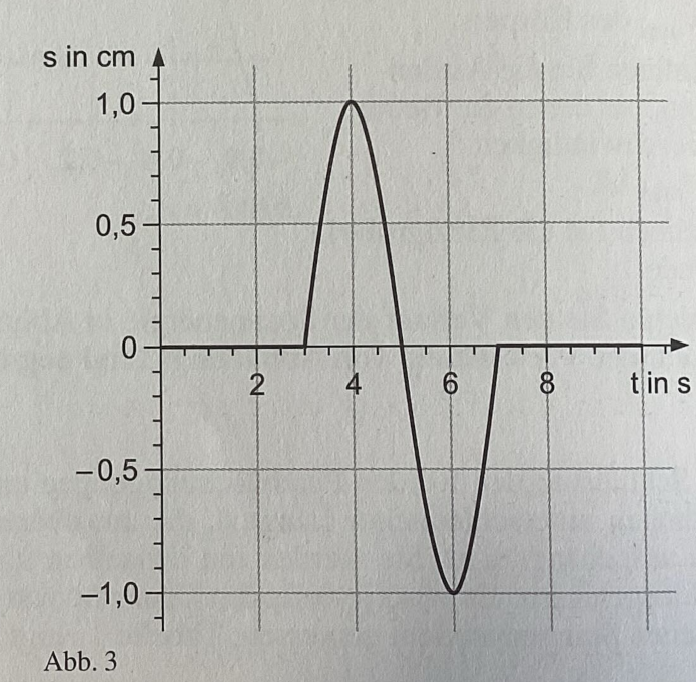
Lösung zur Aufgabe Wellenträger 2
Die Welle legt in 5s den halben Weg zurück, also 50cm. Damit ist die Ausbreitungsgeschwindigkeit:
\[c=\frac{s}{t}=\frac{0,50m}{5s}=0,10\frac{m}{s}\]
Die Wellenlänge berechnet sich zu:
\[\lambda = \frac{c}{f} = \frac{0,10\frac{m}{s}}{0,25Hz} = 0,40m\]
Da die Erreger gegenphasig schwingen, löschen sich die Wellen in der Mitte aus. Dort entsteht ein Knoten.
Nach 9s sind die Wellen jeweils 90cm weit gekommen und habendamit 2,5 Wellenlängen zurückgelegt. Die linke Welle ist nach unten gestartet, die rechte nach oben. Daher wird die linke Welle von 90cm ausgehend nach links mit einer Wellenlänge von $0,4m$ gezeichnet, beginnend mit einem Tal. Die rechte Welle wird von $10cm$ ausgehend nach rechts mit einer Wellenlänge von $0,4m$ gezeichnet, beginnend mit einem Berg. Die Überlagerung ergibt:
Das Momentanbild ergibt sich aus der Summe der beiden Kurven.
Zwischen 10cm und 90cm sind die beiden Wellen identisch und addieren sich, es hat sich dort eine stehende Welle ausgebildet mit Knoten an den Stellen: 10cm, 30cm, 50cm, 70cm, 90cm und Bäuchen an den Stellen 20cm, 40cm, 60cm, 80cm.
Zwischen 0cm und 10cm sowie zwischen 90cm und 100cm liegt nur die einfache Welle vor.
Das Teilchen beginnt erst nach 3s nach oben zu schwingen, da die Welle erst dann dort ankommt.
Es ist also $x=0,10m/s \cdot 3s = 30cm$ von der rechten Wand entfernt, da der rechte Erreger erst nach oben schwingt. Dann schwingt es normal bis 7s, also 4s lang. Danach kommt die Welle vom linken Erreger an und überlagert sich mit der bestehenden Schwingung.
Da die linke Welle nach unten startet, kommt es zur Auslöschung, das Teilchen befindet sich in einem Bewegungsknoten.
Nun starten beide Erreger zum Zeitpunkt 0s gleichphasig nach oben. Das Teilchen bei 70cm ist 7s von links entfernt und 3s von rechts.
Es beginnt also nach 3s nach oben zu schwingen, schwingt dann normal bis 7s, dann kommt die Welle vom linken Erreger an, die auch nach oben startet.
Es kommt zur Verstärkung der Schwingung, die Amplitude verdoppelt sich.
Rechenaufgabe: Wasserbecken
Hier findest du eine Aufgabe zur Ãœberlagerung von Wellen.
In einem mit Wasser gefüllten Becken befindet sich an den Punkten A und B jeweils ein Stift, der von oberen
senkrecht in die Wasseroberfläche eintaucht. Die beiden Stifte beginnen zum Zeitpunkt $t=0s$ gleichzeitig
harmonisch und gleichphasig mit der Frequenz $f=1Hz$ und der Amplitude $A=1mm$ nach unten zu schwingen.
Die Ausbreitungsgeschwindigkeit der Wasserwellen beträgt $c=32\frac{cm}{s}$.
Von Reflexion und Dämpfung wird abgesehen. Ab einem bestimmten Zeitpunkt überlagern sich die von den Punkten A und
B ausgehenden Wellen in Punkt Q.
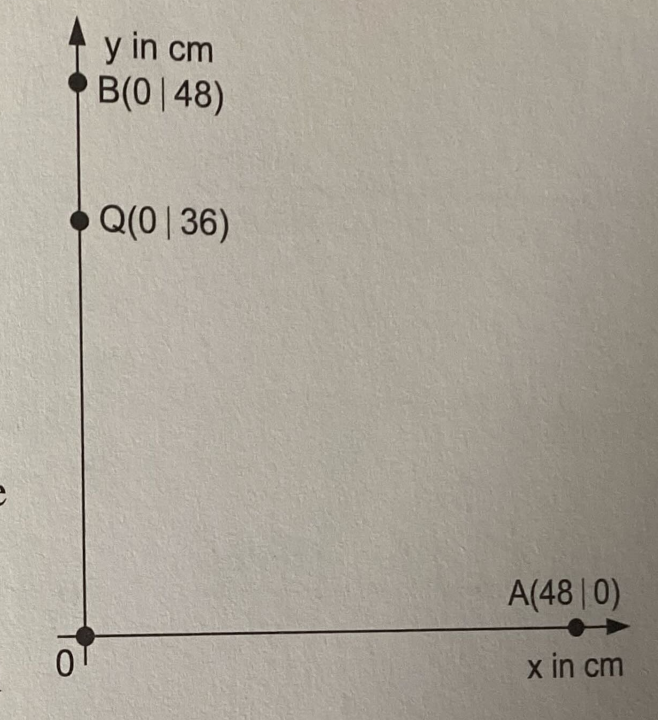
a) Bestimme den Gangunterschied der beiden Wellen im Punkt Q.
b) Zeichne für das Zeitintervall $0s\leq t \leq 2,5s$ ein t-y Diagramm für den Punkt Q und dokumentiere dein Vorgehen.
Lösung zur Aufgabe Wellenträger 3
Der Abstand von A nach Q beträgt $s_A = \sqrt{(48cm)^2 + (36cm)^2} = 60cm$.
Der Abstand von B nach Q beträgt $s_B = 48cm-36cm = 12cm$.
Der Gangunterschied der beiden Wellen im Punkt Q ist somit:
\[\Delta s = s_A - s_B = 60cm - 12cm = 48cm\] Wegen der Wellenlänge $\lambda = \frac{c}{f} = \frac{32cm/s}{1Hz} = 32cm$ ergibt sich der Gangunterschied in Wellenlängen zu:
\[\Delta s = 48cm = 1,5 \cdot \lambda\]
Die Welle von Punkt B kommt nach $t_B = \frac{s_B}{c} = \frac{12cm}{32cm/s} = 0,375s$ in Q an.
Die Welle von Punkt A kommt nach $t_A = \frac{s_A}{c} = \frac{60cm}{32cm/s} = 1,875s$ in Q an.
Es gibt also drei Zeitabschnitte zu betrachten:
1. Von $0s$ bis $0,375s$ ist weder die Welle von A noch die Welle von B in Q angekommen.
2. Von $0,375s$ bis $1,875s$ ist die Welle von A in Q zu sehen, die Schwingung beginnt nach unten.
3. Ab $1,875s$ überlagern sich beide Wellen, da der Gangunterschied $1,5\lambda$ beträgt, löschen sich die Wellen aus. Q ist ein Knotenpunkt.
Rechenaufgabe: Wellenträger 2 und Wasserbecken 2
Hier findest du eine Aufgabe zur Ãœberlagerung von Wellen.
Die nebenstehende Abbildung zeigt das Momentanbild eines linearen Wellenträgers z Beginn der Zeitmessung bei $t=0s$. die Teilchen auf dem Wellenträger schwingen mit der Periodendauer $T=0,4s$
Im Experiment wurde die Welle bei A erregt und hat sich nach rechts ausgebreitet. Der Wellenträger ist nach rechts nicht begrenzt.
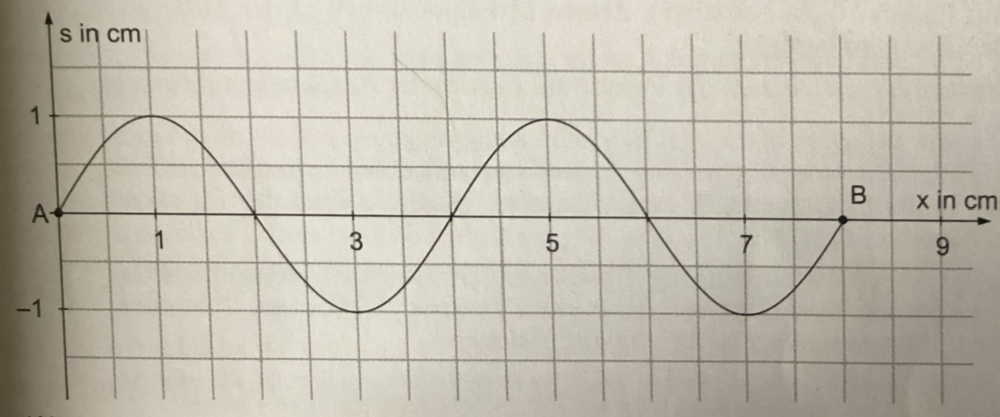
a) Zeichne das Momentanbild des Wellenträgers nach $t=0,1s$.
In einem neuen Experiment wurde zwischen den beiden Punkten A und B eine stehende Welle mit der maximalen Amplitude $A=1cm$ erzeugt. Man beobachtet zum Zeitpunkt $t=0s$ wieder das in der obigen Abbildung dargestellte Momentanbild.
b) Zeichne das Momentanbild des Wellenträgers dieses zweiten Experiments zum Zeitpunkt $t= 0,1s$.
c) Bestimme den Zeitpunkt, bei dem zum ersten Mal die Schaubilder von fortschreitender und stehender Welle zwischen den Punkten A und B wieder gleich aussehen.
d) Zeichne für diesen Zeitpunkt das Momentanbild des Wellenträgers zwischen den Punkten A und B.
Die nebenstehende Abbildung zeigt die Erreger $E_1$ und $E_2$ mit denen auf einer Wasseroberfläche kreisförmige Wellen mit der Wellenlänge $\lambda = 4cm$ und der Amplitude $A=1mm$ erzeugt werden.
Von der Abnahme der Amplitude und von Reflexion wird abgesehen.
Die Erreger haben zunächst den Abstand $d=6cm$ und schwingen gleichphasig.
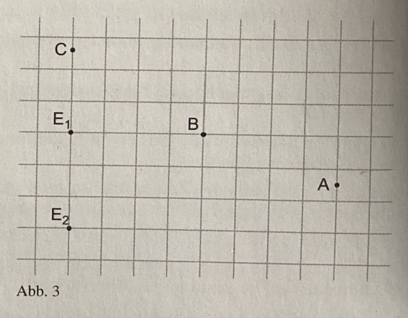
e) Bestimme die Amplitude an den Punkten A, B und C der Wasseroberfläche.
Nun schwingen die Erreger gegenphasig
f) Bestimme die Amplitude an den Punkten A, B und C der Wasseroberfläche.
Die Erreger, die Weiterhin gegenphasig schwingen, werden nun auf einen Abstand von $d=8cm$ auseinander gebracht. Die Amplituden werden auf einen Kreis mit Radius $r=10cm$ betrachtet, dessen Mittelpunkt sich in der Mitte zwischen den Erregern befindet.
g) Bestimme die Anzahl der Punkte maximaler Amplitude aud diesem Kreis.
Lösung zur Aufgabe Wellenträger 3
Die Wellenlänge liest du aus der Abbildung ab, sie beträgt $\lambda = 4cm$.
Die Ausbreitungsgeschwindigkeit berechnet sich zu $c=\frac{\lambda}{T}=\frac{4cm}{0,4s}=10cm/s$.
In 0,1s legt die Welle also den Weg $s=c \cdot t = 10cm/s \cdot 0,1s = 1cm$ zurück. Zeichne die Welle um 1cm nach rechts verschoben.
Bei der stehenden Welle bleiben Knoten Knoten und Bäuche Bäuche. Bei $t=0s$ haben wir nach Voraussetzung die maximale Auslenkung. Nach $0,1s$ sind $\frac{0,1s}{0,4s}=0,25$ Perioden vergangen. Daher befindet sich die Welle in der Gleichgewichtslage.
Die Schaubilder einer fortschreitenden und einer stehenden Welle können nur dann gleich sein, wenn die stehende Welle wieder die maximale Auslenkung hat. Das ist zum ersten Mal nach einer halben Periode der Fall, also nach $t=0,2s$, dann wieder nach einer Periode.
Nach $t=0,2s$ hat die stehende Welle links ein Tal. Hat das die fortschreitende Welle auch nach $t=0,2s$?
In $0,2s$ legt die fortschreitende Welle den Weg $s=c \cdot t = 10cm/s \cdot 0,2s = 2cm$ zurück.
Da die Wellenlänge $\lambda = 4cm$ beträgt, hat die fortschreitende Welle nach $t=0,2s$ ebenfalls ein Tal links.
Somit sehen beide Wellenbilder nach $t=0,2s$ wieder gleich aus:
Der Punkt A befindet sich auf der Mittelsenkrechten von $E_1$ und $E_2$. Die Entfernungen von A zu $E_1$ und $E_2$ sind gleich. Daher ist die Amplitude in A die Summe der Amplituden beider Wellen, also $A_A = A_1 + A_2$.
Der Abstand von B zu $E_1$ ist $8cm$. Der Abstand von B zu $E_2$ lässt mithilfe des Satzes des Pythagoras berechnen: $s_{B,E2} = \sqrt{(6cm)^2 + (8cm)^2} = 10cm$.
Der Gangunterschied in B beträgt somit $\Delta s_B = 10cm - 8cm = 2cm = 0,5 \cdot \lambda$. Es kommt zur destruktiven Interferenz, die Amplitude in B ist Null.
Im Punkt C ist der Gangunterschied so groß wie der Abstand der beiden Erreger, also $\Delta s_C = 6cm = 1,5 \cdot \lambda$. Auch hier kommt es zur destruktiven Interferenz, die Amplitude in C ist Null.
Hier ist es genau andersherum:
In A beträgt der Gangunterschied Null, es kommt zur destruktiven Interferenz, die Amplitude ist Null.
In B beträgt der Gangunterschied $2cm = 0,5 \cdot \lambda$, es kommt zur konstruktiven Interferenz, die Amplitude ist $A_B = A_1 + A_2$.
In C beträgt der Gangunterschied $6cm = 1,5 \cdot \lambda$, es kommt zur konstruktiven Interferenz, die Amplitude ist $A_C = A_1 + A_2$.
Auf der Mittelsenkrechten von $E_1$ und $E_2$ ist der Gangunterschied Null, es gibt dort einen Punkt maximaler Amplitude.
Auf der Verbindungslinie der beiden Erreger ist der Gangunterschied $8cm = 2 \cdot \lambda$, es gibt dort ebenfalls einen Punkt maximaler Amplitude.
Dazwischen ändert sich der Gangunterschied kontinuierlich, also gibt es einen weiteren Punkt maximaler Amplitude beim Gangunterschied von $1 \cdot \lambda$.
Insgesamt gibt es also 8 Punkte maximaler Amplitude auf dem Kreis, schau dir das Bild zur Veranschaulichung an: